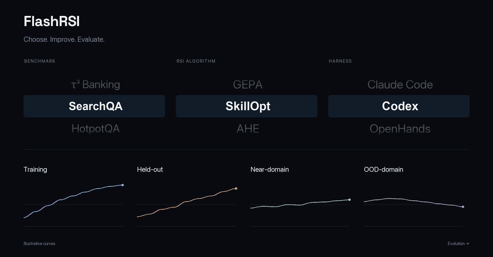

Shelf A / Methods
Search policies
Reusable loops for instruction, skill, context, archive, and harness evolution.
- OPRO · GEPA · EvoPrompt
- ACE · SkillOpt · Evo-Harness
- AHE · ADAS · DarwinX · RRSI
FlashRSI makes self-improvement experiments legible: the method proposes, the harness executes, the benchmark scores, and the Snapshot keeps the version that made the difference.

An improvement is only useful when we can say which resource changed, which tasks exercised it, and whether the gain survived evaluation. FlashRSI puts those questions inside the runtime instead of leaving them in a notebook beside it.
Methods decide how to search. Harnesses decide how an agent runs. Benchmarks decide what counts as progress.
Reusable loops for instruction, skill, context, archive, and harness evolution.
Thirty suites across QA, reasoning, math, coding, research, documents, tools, and interaction.
Complete candidates run through the harness that gives their resources meaning.
The next iteration can answer the more interesting questions: where did a method spend its budget, which failure pattern prompted an edit, and which changed resource transferred across tasks?
Task-level outcomes, Worker proposals, model usage, and failure clusters can be filtered by run, benchmark, harness, and Snapshot lineage.
Compare initial and selected candidates with the same held-out tasks, then connect the score delta back to the files that changed.